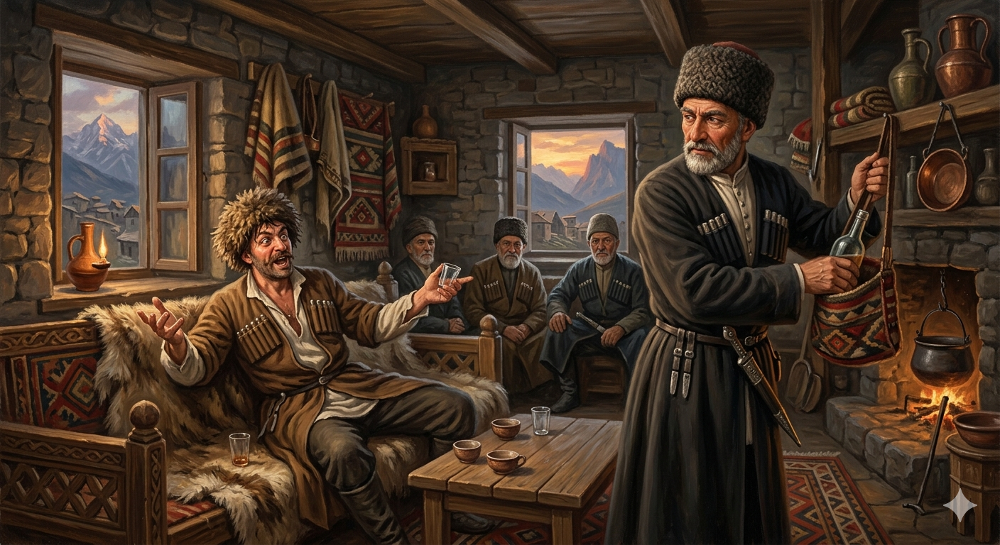

И.А. Дахкильгов. Хьехаме дувцарш - поучительные рассказы-притчи.
И.А. Дахкильгов. Хьехаме дувцарш - поучительные рассказы-притчи. Из ингушского фольклора.

Малар боарамагӀа хила деза
Цхьан фусамдас, геттар вез а ваь, ший хьаьшана каст-каста Ӏодетташ хиннад къаракъ. Моло-ош, кеп йодаш хиннача хьашас аьннад: - Хьай эзделах сога хатта мича хоат Ӏа, со малав. ХӀаьта халахь: со Байсара Мочкхий йиший-воӀ ва хьона! - Даьллахьи, ма дика болх ба! Мехка цӀи йолча наьхах хиннавоав хьо-м! - аьннад фусамдас. АргӀанара кад баьккхача, хьашас аьннад: - Из хӀама дац хьона. Уцига Малсага дув биаь доттагӀа ва со! - ДоттагӀал даькъала хилда шун! - ловца баьккхаб фусамдас. Юха малара кад баьккхача, ший доккхал даьд хьаьшас: - Кхы а ха деза хьона со Шамала наӀиб хинналга. Хоарашхой Заьлмахас банк йоаккхаш цунна аьтта оагӀув со хинналга! Ший дагахьа аьннад фусамдас: "Кхы а Ӏа моле-ма, хьох Ӏумар Ӏаьлий веший воӀ а хургва. Турпала Ӏаьлий доттагӀа а хургва". Шорттига малар дӀалочкъадаьд фусамдас. Цул тӀехьагӀа хайнад цунна: хьаьша вале а, моллагӀа вале а, малар боарамах дотташи молаши хила дезалга.
РУССКИЙ
Пить надо в меру
Некий хозяин, оказывая гостю всяческие почести, раз за разом наливал ему водки. Пьянеет гость и говорит: - По нашему обычаю ты не спросил, кто я. Так знай же, я племянник самого Байсара Мочки, основателя села Базоркина. - Славно, - ответил хозяин, - ты, оказывается, являешься родственником именитых людей. Выпил гость очередной бокал и сказал: - Это еще ничего. Я являюсь еще и присяжным братом самого благородного мужчины Ингушетии Уцига Малсага! - Пусть крепнет ваша клятвенная дружба, - пожелал хозяин. Вновь выпил гость и продолжил самовосхваление: - Ко всему тебе еще надо знать, что я был шамилевским наибом, что я был правой рукою знаменитого абрека Харачоевского Зелимхана, когда он брал банк! Тут хозяин решил про себя: "Э-э, если ты еще выпьешь, то ты станешь племянником самого легендарного абрека Умара Али и сподвижником зятя пророка Мухаммеда, героя Али". Тут хозяин и припрятал выпивку. Понял он: гость ли, другой ли кто, но наливать и пить надо в меру.
ENGLISH
You should drink in moderation
A certain host, lavishing all manner of honours on his guest, kept pouring him vodka time and again. The guest grew drunk and said: 'According to our custom, you haven't asked who I am. Well then, you should know that I am the nephew of Baysar Mochka himself, the founder of the village of Bazorkina.' 'How splendid,' replied the host, 'it turns out you are related to people of renown.' The guest drank another glass and said: 'That's nothing. I am also a sworn brother of the most noble man in Ingushetia, Utsiga Malsag!' 'May your sworn friendship grow ever stronger,' wished the host. The guest drank again and continued his self-praise: 'On top of all that, you should know that I was a naib under Shamil, and that I was the right-hand man of the famous Kharachoy abrek Zelimkhan when he raided the bank!' At this, the host thought to himself: 'Eh, if you have another drink, you'll become the nephew of the most legendary abrek, Umar Ali, and a companion of the Prophet Muhammad's son-in-law, the hero Ali.' So the host stashed the drink away. He realised that, whether it was a guest or anyone else, one must pour and drink in moderation.
НОХЧИЙН
ПОГОВОРКИ
Адамашта юкъе этгар сийдоацачарех малав, аьнна, хаьттача, опаш бувца саг ва аьннад. Когда спросили: “Кто из людей самый бессовестный?” – ответили: “Лгун”.Даьре хабар дувцачох пайда баргбац (лорале). От краснобая не будет пользы (берегись его).Дукха Ӏийхача циско дахка лаьцабац. Дукха Ӏийхача жӀале пхьагал лаьцаяц. Много мяукающая кошка мышей не ловит. Много брещущая собака зайцев не ловит.Малара хьаьшах доттагӀа хиннавац. Собутыльник не может быть другом.Маха биллал саг хоаставича, бӀарга хоаваллал талх из. Когда человека похвалят на толщину иголки, он заметно портится.Сабаре волчох ма теша, сихачох ма кхера. Не верь тихоне, не бойся задиры.Хозача дешаца къонахчал хьокха венначун базара дийнахьа шай миссел мах бац. Кто краснобайством пытается представить себя мужчиной, тому пятак цена в ярмарочный день.Хьоасташ, бакълув хьо, оалаш, Ӏовдала саг сихагӀа коара вахийта веза. Дурака хвали, ему поддакивай и поскорее со двора выпроваживай.Шийх доккхал деш вола саг наьха дег тӀара Ӏовож. Люди не любят кичливого человека.Эсала къонах: маланза – жий, мелча – бордз. Никчемный мужчина трезвый – овца, пьяный – волк.Яьсса пхьегӀа екаш хул. Пустая посуда обычно гремит.Ӏовдал кхетаве гӀертар ше ва Ӏовдал. Кто стремится вразумить дурака, тот сам дурак.